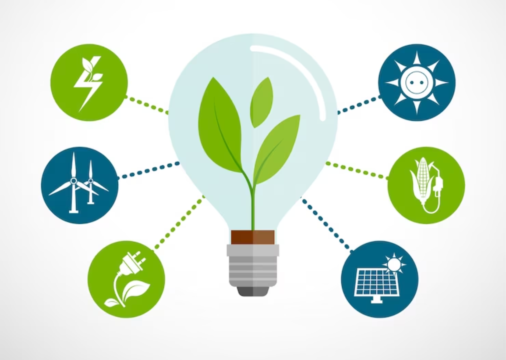

Un sistema energético consolidado sirve de apoyo a todos los sectores: desde las empresas, el sector
médico y educativo, hasta la agricultura, las infraestructuras, las comunicaciones y la alta
tecnología.
Durante décadas, combustibles fósiles como el carbón, el petróleo o el gas han sido las principales
fuentes de energía eléctrica, pero su quema produce grandes cantidades de gases de efecto
invernadero,
causantes del cambio climático y perjudiciales para el bienestar de las personas y el medioambiente.
